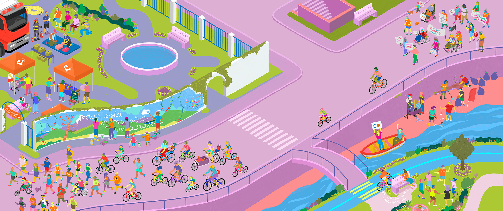
Miles de personas ya son parte de este movimiento solidario
Participa como voluntario, visita actividades solidarias o comparte la tuya.
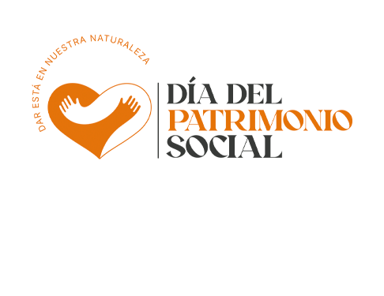
¿Cómo quieres participar hoy?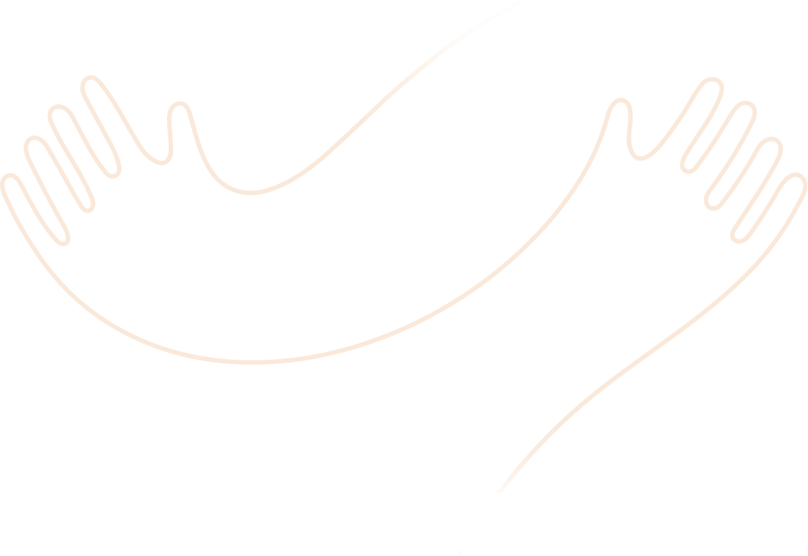
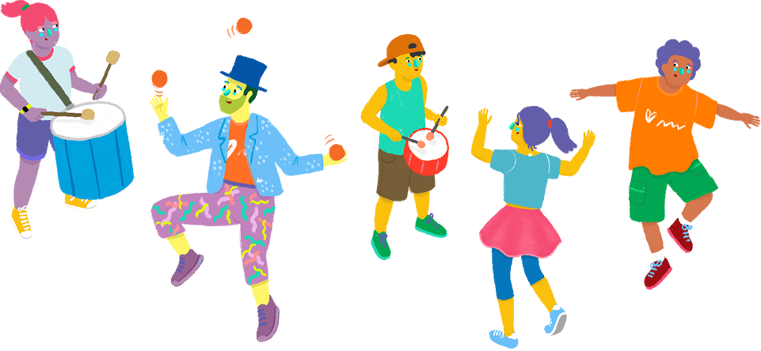
¡Súmate y juntos llegaremos más lejos!
Cada actividad y cada persona cuentan
¿Quieres ayudar a llegar a la meta?
Descarga el kit de difusiónImágenes, stickers y textos para compartir en tus redes
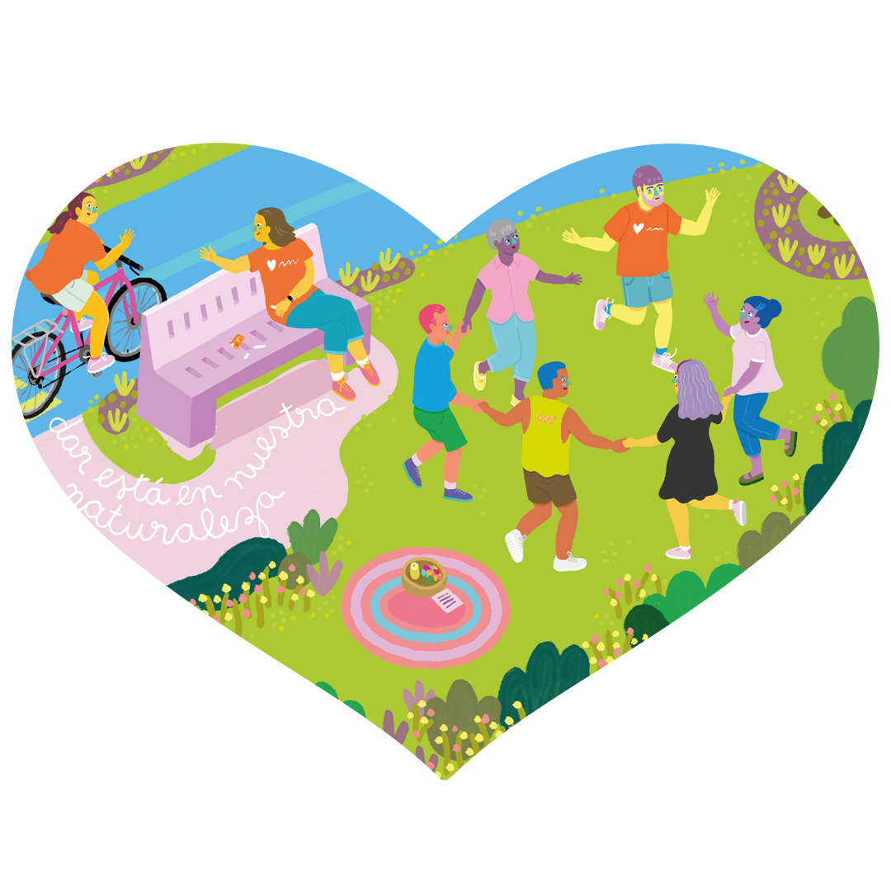
En cada región, múltiples actividades solidarias donde participar
Conoce iniciativas abiertas a todo público, encuentra las más cercanas a ti y sé parte del movimiento.
{{ act.title }}
{{ act.desc }}
¿Qué es el Patrimonio Social?
Es todo aquello que construimos cuando nos unimos para cuidar, compartir y colaborar con otras personas.
Es un patrimonio vivo que se fortalece con cada acción solidaria y que nos pertenece a todas y todos.
Nuestro mayor Patrimonio Social es la solidaridad.
Conoce más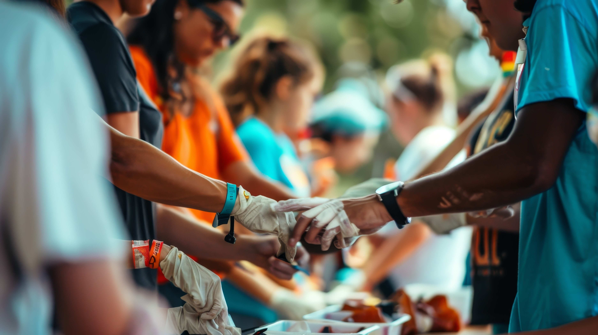

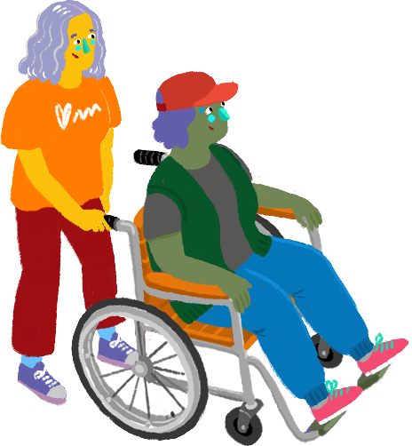

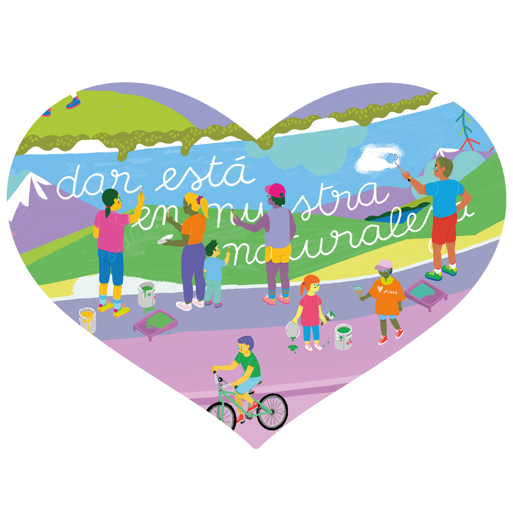
Un movimiento para celebrar y fortalecer la solidaridad
Celebramos este día porque creemos en la fuerza de lo que construimos cuando actuamos juntos. El Día del Patrimonio Social invita a organizaciones, empresas, comunidades y personas a realizar acciones concretas que generen bienestar colectivo y motiven a otros a sumarse. ¡Todas y todos tenemos algo que aportar!
Dar está en nuestra naturaleza.
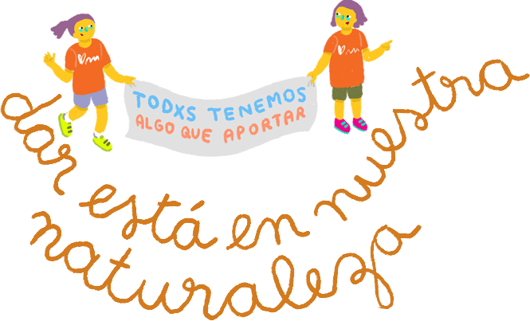
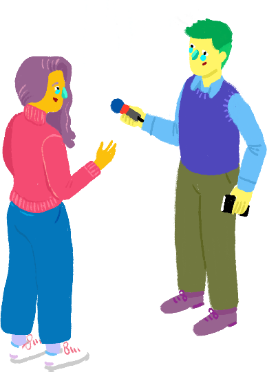
Voces del movimiento
{{ q.text }}
Chile está construyendo su Patrimonio Social y lo celebra desde 2024
Ya somos:
El Día del Patrimonio Social es una iniciativa de:
y sus organizaciones socias
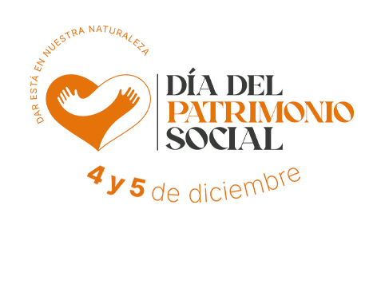